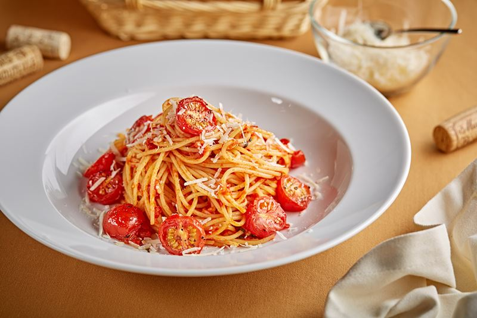
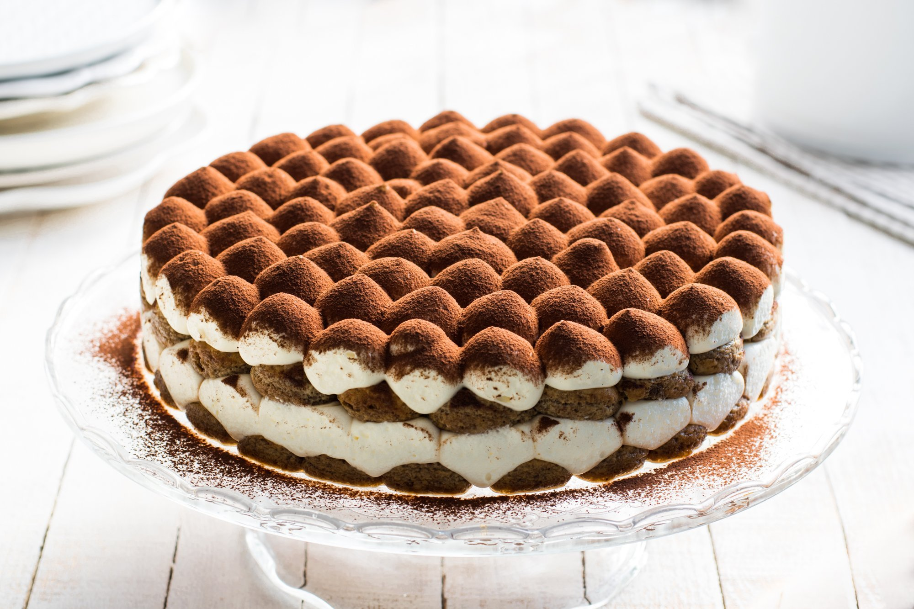

Бургер с говядиной
Бургер с говядиной — это сэндвич, в котором используется говяжья котлета, булочка, различные овощи и соусы
Подробнее

Паста
Паста — это традиционное итальянское блюдо, которое готовится из макаронных изделий и различных топпингов. Например, фарфалле хорошо сочетается с морепродуктами и овощными соусами, а спагетти — с курицей, грибами и сливочным соусом.
Подробнее

Тирамису
Тирамису — итальянский многослойный десерт, в состав которого входят сыр маскарпоне, кофе (обычно эспрессо), куриные яйца, сахар и печенье савоярди.
Подробнее
Рецепт бургера с говяжьей котлетой и свежими овощами:
Ингредиенты:
500 г мелко нарезанной говядины высшего качества;
1 яйцо;
1/4 чашки сухарей;
1 ст. л. горчицы;
1 ст. л. соевого соуса;
1 ч. л. соли;
1/2 ч. л. чёрного перца;
4 булочки для бургера;
1 помидор;
1 лист салата;
1/2 лука;
4 ломтика сыра;
2 ст. л. майонеза;
1 ст. л. кетчупа.
Приготовление:
В большой миске смешайте нарезанную говядину, яйцо, сухари, горчицу, соевый соус, соль и перец.
Хорошо перемешайте все ингредиенты, чтобы они хорошо соединились. Сформируйте котлеты диаметром примерно 10 см и толщиной около 2 см.
Нарежьте помидор на тонкие ломтики, лук — на тонкие полукольца. Полоскайте листья салата, чтобы удалить пыль и грязь.
Нагрейте сковороду на среднем огне. Положите на сковороду котлеты и жарьте их на каждой стороне около 3 минуты, пока они не станут золотистыми.
Разрежьте булочки пополам и положите на гриль или обжарьте на сухой сковороде до золотистого цвета.
Нанесите на нижнюю часть булочки майонез и кетчуп. На майонез и кетчуп положите ломтик сыра, а затем котлету.
На котлету положите лук, лист салата и ломтики помидора. Закройте бургер верхней частью булочки.
Если хотите, чтобы сыр расплавился, можно накрыть сковороду крышкой и оставить бургер на несколько минут.
Нужно приготовить сами спагетти, которые мы польём полученным соусом. Для этого:
Кипятим воду (на 100 граммов воды – 1 литр воды и 10 граммов соли). Нужно уточнять эти пропорции и на упаковке производителя;
Варим в кипятке – особый смысл в том, чтобы их не переварить;
Сливаем кипяток;
Сбрасываем полученные спагетти в глубокую сковороду;
Встряхиваем;
Добавляем полученный соус, опять хорошо встряхиваем сковороду и таким образом, перемешиваем;
Добавляем жареный бекон или грудинку и опять встряхивая хорошо перемешиваем.
Выкладываем в глубокую супницу либо сразу в тарелки. Сверху посыпаем тёртым пармезаном. Можно это делать уже в тарелках при подаче.
Можно украсить при подаче блюдо свежим базиликом. Как вариант, можно обойтись без сливок, без чеснока. Это уже на ваш вкус!
Можно попробовать изменить рецептуру на свой вкус, добавив свои ингредиенты.
Ингредиенты:
печенье — 200 г;
растворимый кофе — 2 ч. л.;
вода (кипяток) — 300 мл;
мягкий творог — 350 г;
сахар — 2 ст. л.;
молоко — 50 мл;
какао для подачи.
Приготовление:
В глубокой ёмкости соедините творог, сахар и молоко, перетрите до пюреобразного состояния с помощью погружного блендера.
Если масса получится слишком густой, добавьте немного молока.
Кофе залейте кипятком и тщательно перемешайте до полного растворения.
Кусочки печенья поочередно обмакивайте в кофе и выкладывайте в порционную креманку.
Сверху на первый слой печенья выложите взбитый творог. Аналогично сделайте 3–4 слоя.
Оставьте десерт настаиваться в течение 60 минут в холодильнике.
Спустя час достаньте десерт из холодильника, посыпьте какао или тёртым шоколадом.